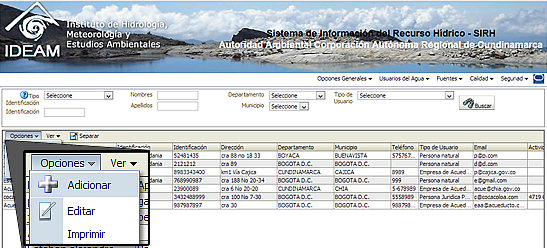

Una vez ha realizada la identificación de las fuentes hídricas de su jurisdicción, usted podrá registrar los Usuarios del Recurso Hídrico. El Sistema le solicitará datos de contacto del usuario del agua (persona natural, jurídica o Empresa de Servicios Públicos) y del predio o sitio donde se hace uso del recurso.
Para crear un nuevo Usuario del Agua, de clic en el menú "Usuarios del Agua" y despliegue el menú secundario "Opciones" para "Adicionar" un nuevo usuario.
